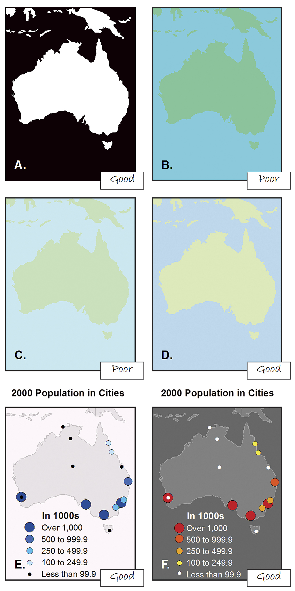
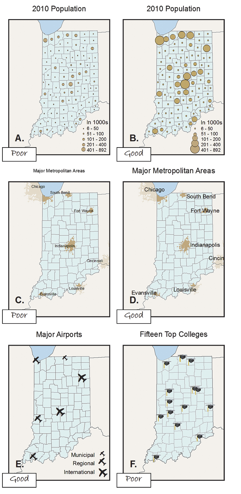
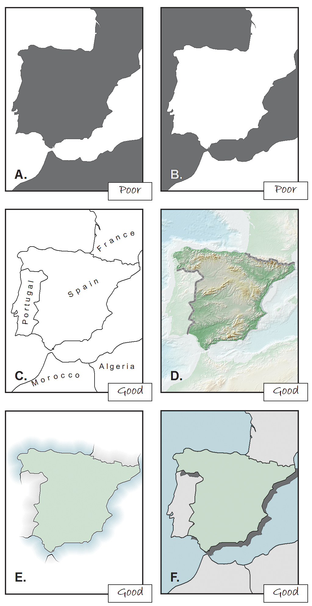
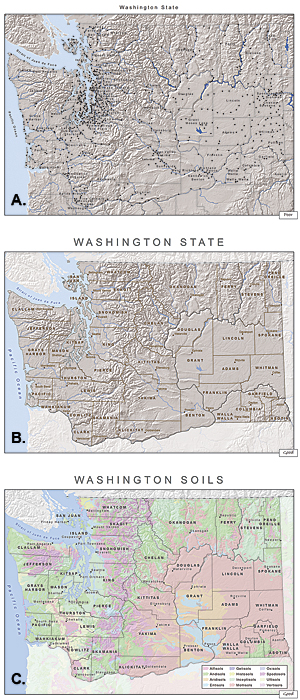
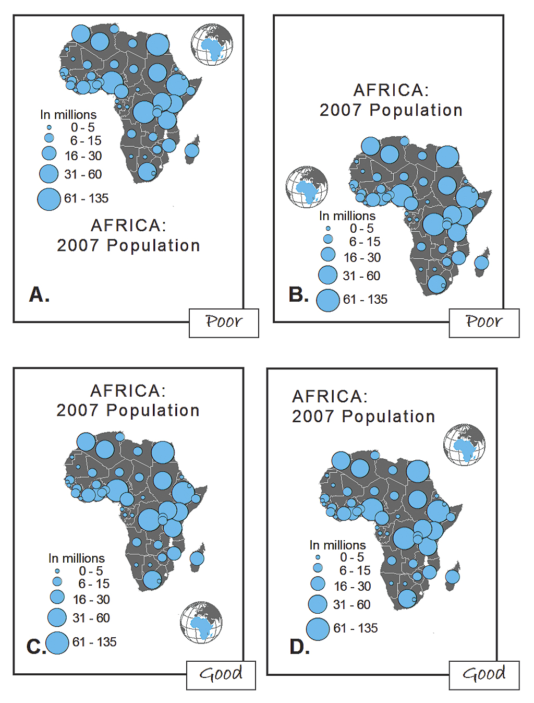

Winter 2017 | Geography 371 | Geovisualization: Web Mapping
Instructor: Bo Zhao | TA: Andy Wilson | Location: 235 Wilkinson | Time: Wednesday 2-2:50pm
Learning Objectives
Designing an effective web site requires more than just gathering relevant information and posting it on the web. Like a good paper or research presentation, a quality web project demands as much attention to the selection, organization, and presentation of material as to the underlying research itself. You should strive, above all, to be both clear and engaging in every aspect of site design. Without the first, you will quickly lose your audience. Without the second, you'll never catch their attention in the first place.
Here are some concrete suggestions for making web sites:
Consider your audience and your goals. You should have a clear sense of who will be using your site (peers, genera public, your future boss, etc.) and what kind of experience you are hoping to provide. What exactly are you trying to accomplish here? Why is this important?
Plan your site on paper first. You can draw a "family tree" of pages with arrows indicating links. Or you can make a hierarchical outline. Either way, it is essential to organize your information and lay out the architecture of your site before attempting to implement your vision.
Strive for consistency. You want your project to have an identity, so all the pages in your project should have a common feel: there should be consistency among backgrounds, color schemes, navigational tools, and tone of voice. This is especially important if you are dividing up your site's pages among several team members. Otherwise, your project will seem like two or three separate projects lumped together, rather than a single, unified whole.
Provide a rich set of links within your site. Ideally, there should be multiple ways for your user to navigate your pages. You should consider including a prominent 'home' link or icon on each page, a menu or table of contents, and highlighted links within textual material to related information elsewhere on the site.
Don't hide important information. Users don't like to click too many times to find the information they want -- if information is particularly important, make it accessible up front. On any given page, remember that as with a newspaper, the top left corner is the most prominent. See the National Geographic Website for a good example.
Provide opportunities for interaction. How is your site any different from a traditional print document? How can you involve the reader in ways that non-digitized texts usually cannot? Interactivity can be a compelling, innovative means of engaging your reader and creating experiences that cannot be replicated in other media.
Avoid text-only pages. Ideally, a user should never encounter an entire screen full of uninterrupted text in browsing your site. Again, take advantage of the web medium!
Don't sacrifice elegance for pizzazz. Just because you can make images fly across the screen does not mean you necessarily should. Every design element of your site (colors, images, animation) ought to correspond thematically with the content and goals of your project.
Provide a link for every URL you mention in your site. If your bibliography or notes include a citation for another website, list the URL in full, but make it 'clickable' as well so that the user can go directly to the site in question.
Give your site a descriptive title.Your title should convey the content of your site in a concise but engaging manner. Remember, the title is how your site will be identified on the home pages. Ideally, it should pique the curiosity of users and prompt them to explore your project pages.
Include a brief introduction. This should be part of your site's home page, and should explain the scope and purpose of the site. Once users have noticed your title and followed a link to your site, they will expect quickly to find a further elaboration of your title, a brief paragraph or two describing what the site is all about and what makes it interesting. You have caught the user's eye with your title; the introduction is your chance to heighten their interest and persuade them to actually stick around and explore.
Make your site's home page as useful a starting point as possible. The viewer should be able to see at a glance what your site is about, how it is laid out, and what kinds of resources and features it includes. Ideally, all of this information (along with your site title and introduction) should be visible on a single fast-loading screen that requires a minimum of scrolling.
Make sure your text is legible. Check the size, color, and font of all text within your site to confirm that it can be easily read. Be especially careful of dark or fancy backgrounds that make text hard to read.
Make sure your site is platform independent. Your site should be viewable on both Mac and Windows machines using either of the most commonly available browsers, Chrome, Firefox or Internet Explorer.
Consider the needs of your viewers. Think about the bandwidth your site will require. Keep in mind that not all users will have the luxury of an Ethernet connection. Minimize the memory requirements of your site by compressing images and other large files. And make sure all your images have ALT-TEXT behind them. This makes the site accessible both to low-vision users and users with slow modems who have turned the images off.
Thoroughly test your site. Ask a friend to sit down and explore your site. Ask them to think out loud, and watch them navigate the site. Do they get lost? Do they have trouble finding links? Do they have trouble understanding your labels? Do they understand your prose? Ideally, you should elicit and incorporate feedback about your site in the course of developing it as well as when its nearing completion. Be sure to test your site both of the most commonly used browsers, Netscape and Internet Explorer.
Proofread carefully! Your web map is a public resource and all of its pages should maintain a high level of professionalism. Check carefully for spelling and grammatical errors before posting your written materials to the web.
Cartographers apply many design principles when compiling their maps and constructing page layouts. Five of the main design principles are legibility, visual contrast, figure-ground organization, hierarchical organization, and balance. Together these principles form a system for seeing and understanding the relative importance of the content in the map and on the page. Without these, map-based communication will fail.
Note: It's worth noting that these principles are not applied in isolation but instead are complementary. Collectively, they help cartographers create maps that successfully communicate geographic information.
Visual contrast relates how map features and page elements contrast with each other and their background. To understand this principle at work, consider your inability to see well in a dark environment. Your eyes are not receiving much reflected light, so there is little visual contrast between the objects in your field of view and you cannot easily distinguish objects from one another or from their surroundings. Increase illumination, and you are now able to distinguish features from the background. However, the features will still need to be large enough to be seen and understood so that your mind can decipher what your eyes are detecting.
The concept of visual contrast also applies in cartography. A well-designed map with a high degree of visual contrast can result in a crisp, clean, sharp-looking map. The higher the contrast between features, the more some features will stand out (usually features that are darker or brighter). Conversely, a map that has low visual contrast can be used to promote a more subtle impression. Features that have less contrast appear to belong together.

Although black and white (A) provide the best visual contrast, this is not always the best color combination for maps. When using colors of similar high (B) or low (C) saturation (brightness), the hues (blue and green, in this case) must be distinguishable. If they are not, varying the saturation or value (lightness or darkness) of a color (as with the water in D) can create the contrast that is missing. Operational overlays should contrast with the basemap (E and F).
Legibility is the ability to be seen and understood. Many people strive to make their map contents and page elements easily seen, but it is also important that they can be understood. Legibility depends on good decision making when selecting symbols. Choosing symbols that are familiar and are appropriate sizes results in symbols that are effortlessly seen and easily understood. Geometric symbols are easier to read at smaller sizes. More complex symbols require more space to be legible.
Visual contrast and legibility can also be used to promote the other design principles: figure-ground organization, hierarchical organization, and balance.

Symbols (A) and text (C) that are too small are illegible. Appropriately sized symbols (B) and text (D) can be easily distinguished and read. Using familiar geometric icons, such as an airplane for airports (E), helps readers immediately understand the meaning of the symbol. More complex symbols, such as a mortarboard for universities (F), need to be larger to be legible.
Figure-ground organization is the spontaneous separation of the figure in the foreground from an amorphous background. Cartographers use this design principle to help map readers focus on a specific area of the map. There are many ways to promote figure-ground organization, such as adding detail to the map or using a whitewash, a drop shadow, or feathering. 
It is sometimes hard to tell what is the figure and what is the ground (A and B). Simply adding detail to the map (C) can help map readers distinguish the figure from the ground. Using a whitewash (D), feathering (E), or a drop shadow (F) can also help.
One of the major objectives in mapmaking is to "separate meaningful characteristics and to portray likenesses, differences, and interrelationships." The internal graphic structuring of the map (and, more generally, the page layout) is fundamental to helping people read your map. You can think of a hierarchy as the visual separation of your map into layers of information. Some types of features will be seen as more important than other kinds of features, and some features will seem more important than other features of the same type. Some page elements (e.g., the map) will seem more important than others (e.g., the title or legend).
This visual layering of information within the map and on the page helps readers focus on what is important and lets them identify patterns. The hierarchical organization of reference maps (those that show the location of a variety of physical and cultural features, such as terrain, roads, boundaries, and settlements) works differently than for thematic maps (those that concentrate on the distribution of a single attribute or the relationship among several attributes). For reference maps, many features should be no more important than one another and so—visually—they should lie on essentially the same visual plane. In reference maps, hierarchy is usually more subtle and the map reader brings elements to the forefront by focusing attention on them. For thematic maps, the theme is more important than the base that provides geographic context.

When the symbols and labels are on the same visual plane (A), it is difficult for the map reader to distinguish among them and determine which are more important. For a general reference map (B), using different sizes for the text and symbols (e.g., city points and labels), different line styles (e.g., administrative boundaries), and different line widths (e.g., rivers) are some of the ways you can add hierarchy to the map. When mapping thematic data (C), the base information (e.g., county boundaries and county seats) should be kept to a minimum so that the theme (e.g., soils) is at the highest visual level in the hierarchy.
Balance involves the organization of the map and other elements on the page. A well-balanced map page results in an impression of equilibrium and harmony. You can also use balance in different ways to promote edginess or tension or create an impression that is more organic. Balance results from two primary factors: visual weight and visual direction. If you imagine that the center of your map page is balancing on a fulcrum, the factors that will tip the map in a particular direction include the relative location, shape, size, and subject matter of the elements on the page.

Positioning heavier elements together can make the page look top-heavy (A) or bottom heavy (B). Centering the map slightly above center (C) ensures that it is in the most prominent position on the page. The position of elements can also cause the eye to move in a desired direction. In D, the title is the first thing read, followed by the locator map, then the map of Africa, and finally the legend.
Together these five design principles have a significant impact on your map. How they are used will either draw the attention of map readers or potentially repel them. Giving careful thought to the design of your maps using these principles will help you to assure that your maps are ones people will want to look at!
[1] Buckley, A. (2012). Make Maps People Want to Look At. ESRI 46-51.
[2] Bafic Web Design Principles. retrieved December 20, 2016 from http://umich.edu/~ece/resources/design.html